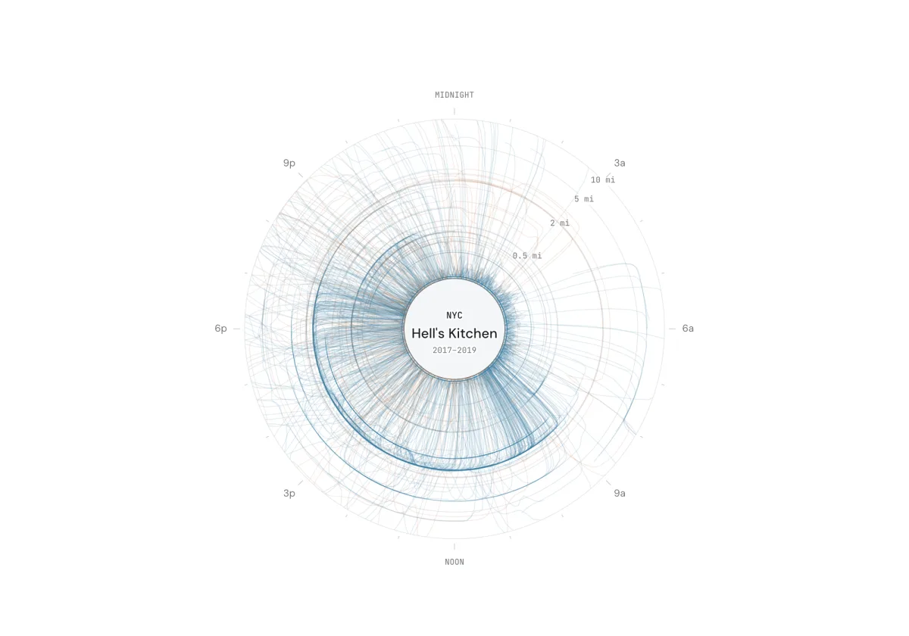
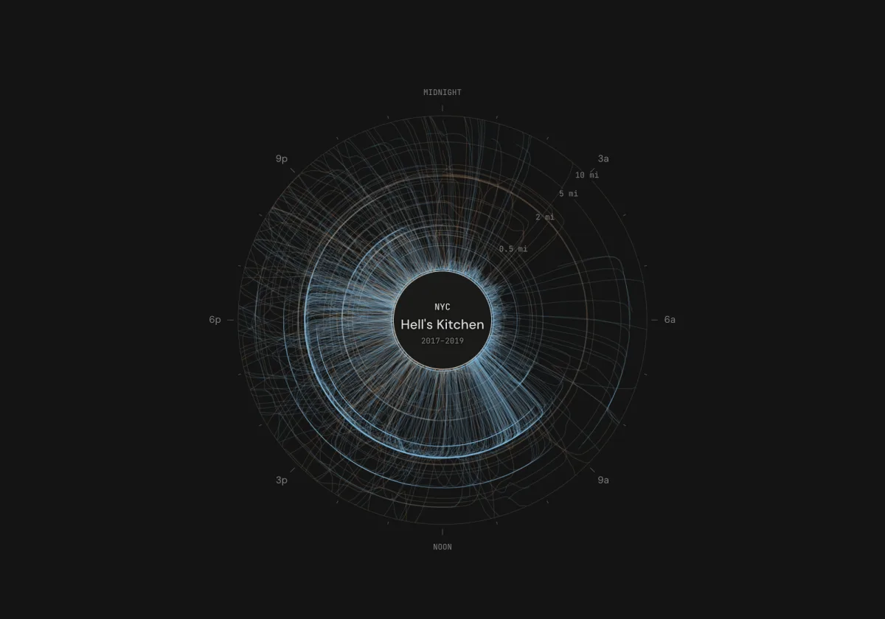
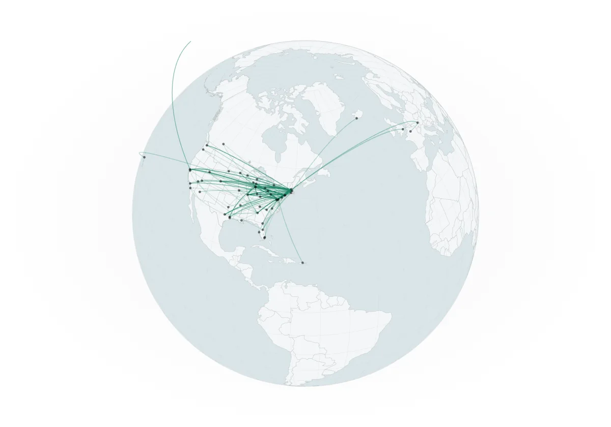
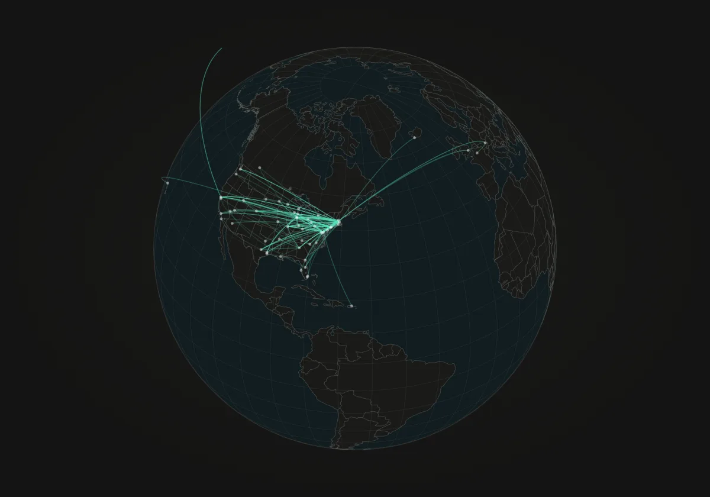
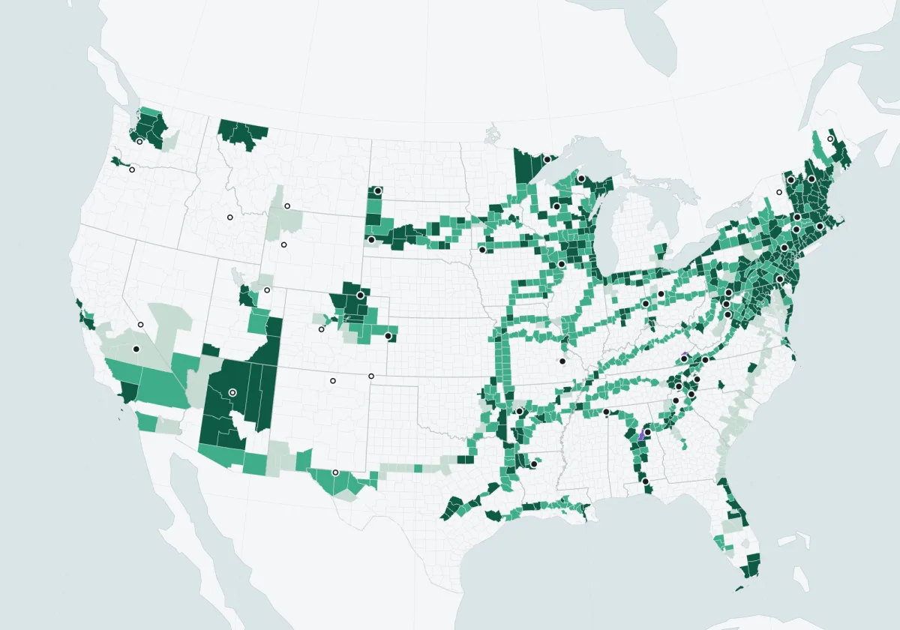
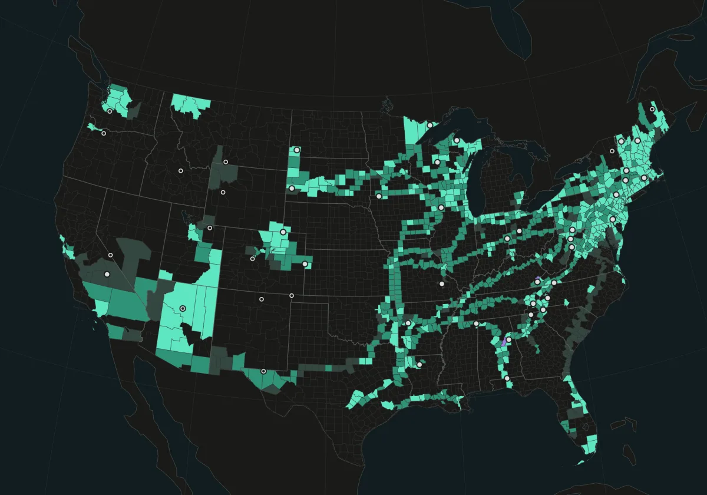
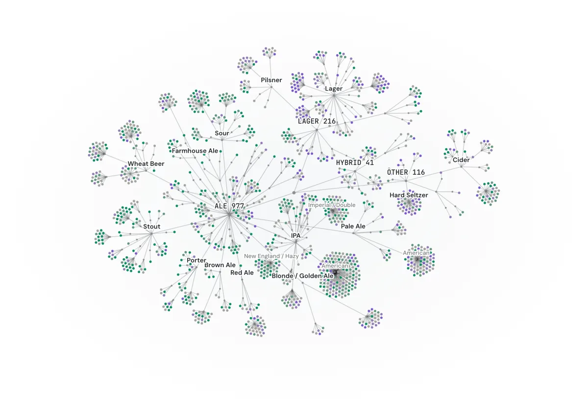
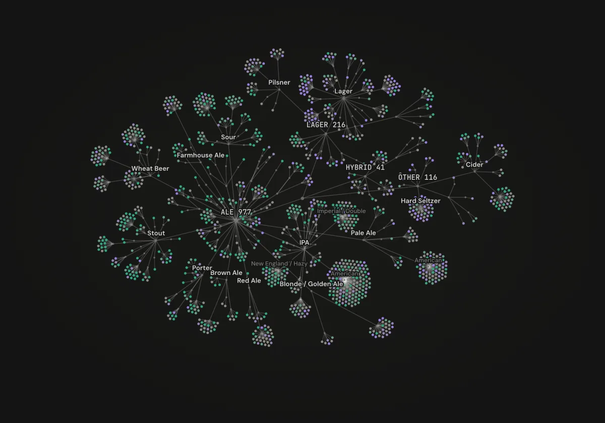

Map Room
For my whole adult life, a mountain of data has been accumulating in my pocket: business trips, highpoint road trips, weekends away with friends, and the beers drunk along the way. My phone faithfully logged them, check-ins stacked up one by one, and flight confirmations disappeared into the black hole of my inbox. I've collected some of those breadcrumbs here to make what I hope is an interesting, interactive, and, most importantly, beautiful multi-decade slice of life.
- Since Apr 20, 2011
- 1.7M GPS points
- 10,482 check-ins
- 965 counties
- 512 flights
- 1,350 beers


Yarnball
How far from home I was at every minute of every day, wound into a yarnball for each place I have lived.
Explore ↗

Flights
Every flight I've taken since 2008, flown again in order across a globe.
Explore ↗

Counties
Every US county I've set foot in, filled in one at a time in the order I first got there.
Explore ↗

Beer Styles
Every beer I've had since 2013, each on its own twig of a family tree of styles, colored by how much I liked it.
Explore ↗